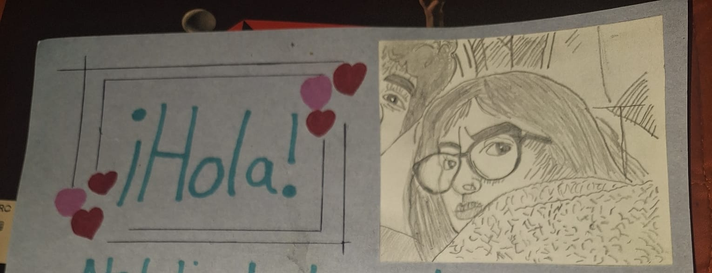
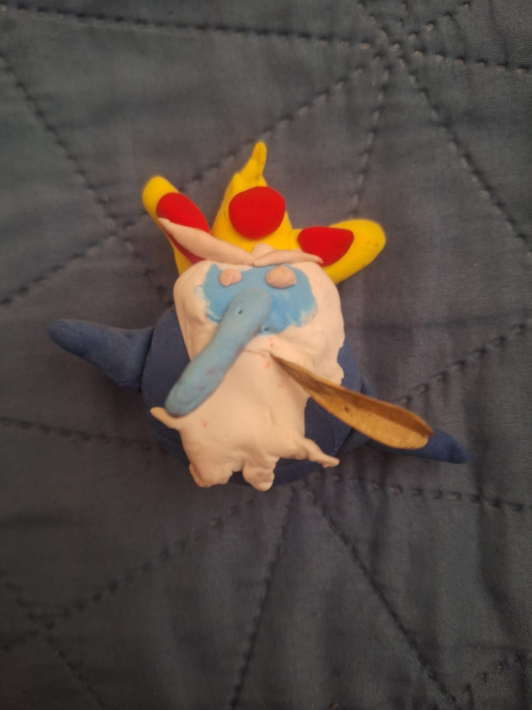
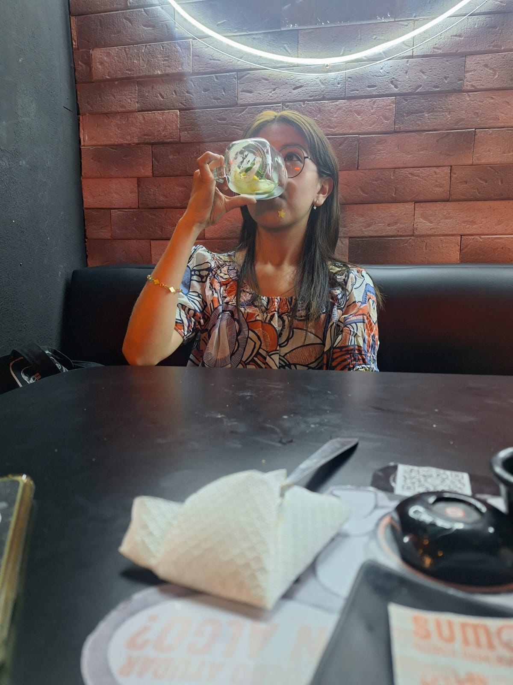

La carta
No tengo muchas fotos de este día, más que nada son recuerdos, realmente no sabía cómo hacerlo, pero de a poco se me iban ocurriendo ideas, fueron bastantes intentos de esta carta porque no me cabía todo lo que quería decir y tenía que volver a empezar y ya que estuviera bien, pegar el dibujo de la foto de perisur pooorque me gusta mucho y en ese entonces era de las pocas fotos que teníamos

Nuestras figuras
jajaja me da risa como planee todo, pero como no sabía cómo era el foamy moldeable, mi idea del gato era difícil para mi, y en lugar de hacerlo yo, lo hiciste tu mientras yo hacía al Rey Helado jaja, esa hoja que tiene, es la original, aún tiene su porro, fue bastante bonito ese día, en esos pastos haciendo figuritas con música de fondo y esperando el momento para decirte, con esta música de fondo que ósea justo salió esa y era perfecta y ahiii va la naquis a poner Álvaro Díaz

Despuesito
Aquí ya es comiendo después de haberlo hecho y que dijeras que siiiiiiiiiii, yujuuuuuuu, te acuerdas de como a lado habían dos tipas que nos miraban raro, ya desde el momento 1 nos miraban eh, porque somos la sensación, nos tienen envidia obvio y así será siempree, espero que te haya gustado este regalo, es una recopilación de toooooodo lo que hemos pasado durante este increíble año, gracias por todo, por ser tu, estoy emocionado por todo lo que nos falta por vivir prque estoy seguro de que serán cosass increiiiiibles MUUUUUUUUUUAAAAAAA